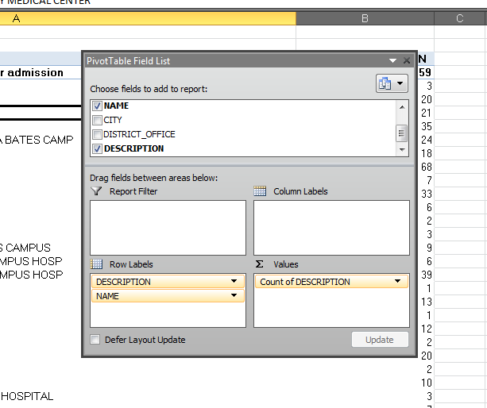

What to do when you get your data
Good Spreadsheet Formats
- .xls
- .xlsx
- .ods
- .csv
- .tsv
Bad Spreadsheet Formats
Adverse Events Database
Database of medical errors
Download the sample file:
http://bit.do/adverse-events
We used it as part of this story.
Insights from data can form the basis of whole stories
A basic insight
Hospitals in California have reported 6,282 adverse events to the state in the last four fiscal years. They range from “death associated with an error”, to “decubitus ulcers,” or bedsores.
More advanced insights require subsetting or manipulation
A more advanced insight:
Santa Clara Valley Medical Center had a total of 64 adverse events, but 30 of those were “retention of a foreign object” in a patient during surgery, the most in the state during that time period.
Let's get to the data
Subsetting and Sorting
We are not modifying the contents of cells or creating new ones.
How to sort
Sort by fiscal year

Filter for 'Santa Clara Valley Medical Center'
How to pivot
Put it in a new worksheet
The 'builder'
The 'values' field
Sort the counts
A more interesting pivot
Which hospital has the most 'Retention of a foreign object in a patient'?
Start a new pivot table
Group by TWO labels
Select the row you want to filter
Select the adverse effect
Sort
A bonus subset
Double-click on any calculated cell
What else???
There's a lot I didn't cover:
- Formulas
- Splitting and adding columns
- Stats
Download the slides
http://scottpham.xyz/excel-slides/
Scott Pham